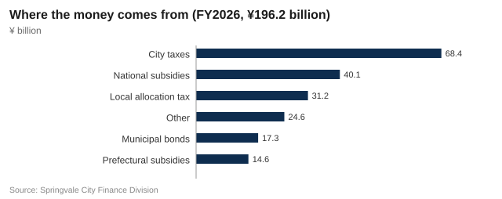

Council passes ¥3.4 billion extra budget for flood pumps, school shelters and the new library
Springvale's general account for fiscal 2026 rises to ¥199.6 billion after the city council approved a September supplementary budget by 32 votes to 8. Here is where the money goes, where it comes from, and how spending on libraries has changed.

Springvale City Council on Wednesday approved a ¥3.4 billion supplementary budget, raising the city's general account for fiscal 2026, which runs from April 2026 to March 2027, to ¥199.6 billion. The vote, at the final plenary session before the mayoral election on 8 November, was 32 to 8 in the 40-seat council.
The initial budget for the year, passed in March, was ¥196.2 billion, 3.1% more than the ¥190.3 billion of fiscal 2025 and the largest in the city's history. The September revision adds money for flood defences, school gymnasiums used as shelters, the opening of the new Central Library, help for small businesses facing higher energy bills, and safety at next week's Lantern Festival.
What the extra ¥3.4 billion pays for
The largest item, ¥1.1 billion, starts work on a drainage pump station at Shimo-Kawabata, the district where the Mirror River overtopped its banks in September 2021 and flooded 1,140 homes. The station's pumps will move 12 cubic metres of water a second into the river during heavy rain and are due to be finished in fiscal 2028. The pump station is the city's share of flood works; the embankment itself is a ¥8.6 billion Harvest Prefecture project.
A further ¥0.9 billion will put air conditioning into the gymnasiums of 21 elementary and junior high schools that serve as evacuation shelters, by July 2027. Shelters in school gyms reached 35 °C during the evacuations of August last year, the city said.
| Item | Amount | Notes |
|---|---|---|
| Shimo-Kawabata drainage pump station (design and first works) | ¥1.1 billion | Pumps of 12 m³ per second; completion in fiscal 2028 |
| Air conditioning for 21 school gymnasiums used as shelters | ¥0.9 billion | Installed by July 2027 |
| Opening of the new Central Library (books, IT, moving) | ¥0.6 billion | Library opens 7 November |
| Energy price support for small businesses | ¥0.5 billion | Up to ¥200,000 per business |
| Lantern Festival safety (crowd sensors, stewards, first aid) | ¥0.3 billion | Includes the ¥38 million crowd-sensor trial |
| Total | ¥3.4 billion | General account after revision: ¥199.6 billion |
Source: Springvale City Finance Division.
Every item in this budget answers a question residents asked us after 2021: will the water stay out, and where do we go if it doesn't?
Mayor Takuya Hirose
The eight votes against came from the Mirror Citizens' Network group and two independents. Councillor Emi Tsuchiya said her group supported the pump station but not the timing.
The pump station is necessary. But this budget was written for the election. There is nothing for older residents who can no longer drive, and nothing to soften the water rate rise we voted through the same afternoon.
Emi Tsuchiya, Mirror Citizens' Network
Where the money goes
Welfare and health remains by far the largest area of spending at ¥82.1 billion, 42% of the initial budget and ¥2.7 billion more than last year, mainly because of rising costs of care for older residents and the city's free childcare for children under three. Civil engineering, which covers roads, rivers and parks, rose by ¥1.1 billion to ¥22.9 billion.
The biggest proportional rise is in culture, sport and libraries, up a third from ¥6.3 billion to ¥8.4 billion. Debt repayment fell from ¥19.7 billion to ¥19.2 billion, and commerce, tourism and labour from ¥7.2 billion to ¥6.9 billion after the end of a pandemic-era tourism voucher scheme.
Libraries: up 44%
Almost all of the increase for culture is the new Central Library, which opens on 7 November next to Springvale Central Station. Spending on library services, which covers staff, books and the running of the Central Library and six branches, rises from ¥1.42 billion in fiscal 2025 to ¥2.05 billion this year, an increase of 44%. Construction payments for the building rise from ¥1.9 billion to ¥3.6 billion, the last instalment of its ¥6.2 billion cost.
The supplementary budget adds another ¥0.6 billion for opening the library: new books, the IT system and moving 480,000 volumes from the old library in Shiroyama. In all, the city will spend ¥6.25 billion on libraries this fiscal year. The new library's running costs are forecast at ¥1.31 billion a year, against ¥820 million for the old building.
Where the money comes from
City taxes, mainly residents' and property taxes, bring in ¥68.4 billion, or 34.9% of the initial budget. The rest depends heavily on Tokyo and the prefecture: ¥40.1 billion in national subsidies, ¥31.2 billion in local allocation tax and ¥14.6 billion in prefectural subsidies.

New borrowing through municipal bonds is ¥17.3 billion. The city's outstanding debt stood at ¥214.5 billion at the end of fiscal 2025, or ¥519,600 for each of its 412,800 residents. "Other" revenue of ¥24.6 billion includes fees, the city's reserve fund and ¥3.8 billion of furusato nozei hometown tax donations received in fiscal 2025, most of them for gifts of yuzu and Springvale ware.
Water rates passed the same day
In a separate vote on Wednesday afternoon, the council approved the Waterworks Bureau's tariff revision by 29 votes to 11. Water and sewerage charges will rise by an average of 8.5% from 1 April 2027; a two-person household using 20 cubic metres every two months will pay ¥6,325 instead of ¥5,830.
Both votes are likely to feature in the election campaign. Mayor Hirose is seeking a third term; his main challenger, former prefectural assembly member Michiko Sawada, has promised to review the water rise and to halve RideCard fares for residents aged 70 and over, paid for by the city.


Comments 5
ShimoKawabata2021
We were flooded in 2021. The pump station should have been in the budget three years ago, not five weeks before an election. Still, glad it's finally happening.
budget_watcher
¥519,600 of debt per resident and they're spending ¥1.31 billion a year to run a library. Who is going to pay for that when the population keeps falling?
library_lover
@budget_watcher The old library had 180 seats for a city of 400,000. Students were queuing outside at 8am. It's not a luxury.
Minato_dad
Air conditioning in school gyms is the most sensible thing in here. My parents spent two nights at Minatomachi JHS last August and it was unbearable.
k.tsuji
Water up 8.5%, phone bills up 10%, and the council votes for it on the same day as its own spending plans. Good timing.